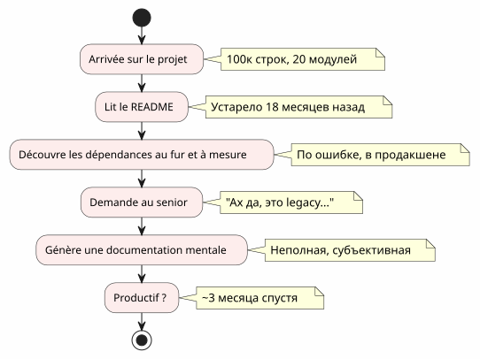
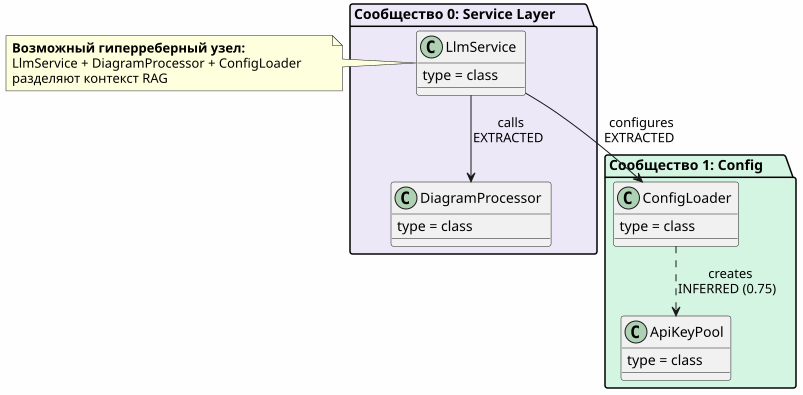
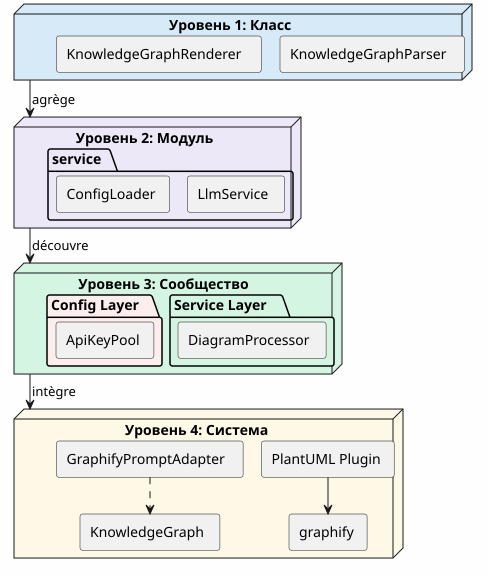
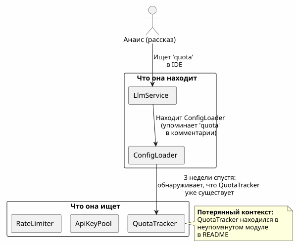
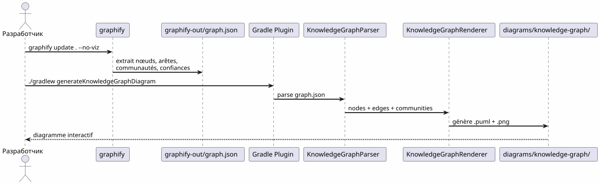
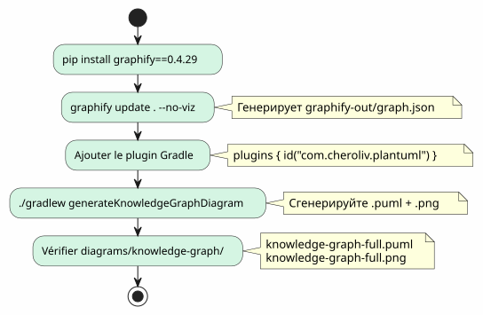
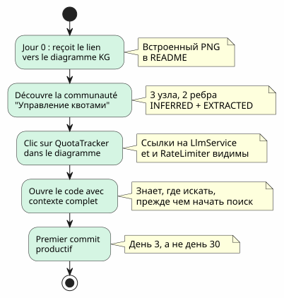
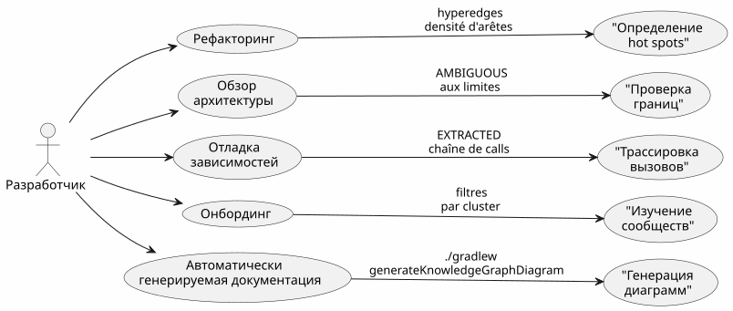

Knowledge Graph как инструмент понимания codebase
Опубликовано 20 April 2027
- Стена онбординга
- Что такое Knowledge Graph?
- 4 уровня понимания
- Утерянный контекст: конкретный сценарий
- Конвейер: код по меню в одной команде
- Типы рёбер: что говорит доверие
- 5 минут для генерации вашего собственного Knowledge Graph
- Значение для онбординга: пересмотренный сценарий Анаïs
- Значение для ежедневной навигации
- Ограничения и перспективы
- Заключение
Вы приступаете к проекту из 100 000 строк. Двадцать модулей, сто классов, невидимые зависимости, история забытых рефакторингов. README обещает архитектуру "microservices", но код рассказывает другое. Сколько времени потребуется, чтобы стать продуктивным?Три месяца— если вам повезёт. А если интерактивная карта кода, сгенерированная автоматически, могла бы сократить это до трёх дней ?
- стук
-
[]
Стена онбординга
Каждый разработчик пережил эту сцену:
-
День 1: мы показываем вам README (последнее обновление: 18 месяцев назад)
-
День 3: вы обнаруживаете, что модуль`billing`вызывает модуль тайно`notification`
-
День 7: старший вам говорит: «О да, этот класс на самом деле делает две вещи, мы планировали разделить её
-
День 14: вы осознаете, что вся бизнес-аналитика находится в`utils/LegacyHelper.java`— файл, на который нигде нет ссылок

Проблема не в отсутствии документации — этоотсутствие картыКарта, показывающая реальную территорию, а не воображаемую территорию последнего редизайна.
Что такое Knowledge Graph?
Knowledge Graph — это структурированное представлениезнатьсодержимое в вашей кодовой базе :
| Сущность | Пример в коде | Роль в графе |
|---|---|---|
Узел |
Класс, функция, концепт |
Вершина графа |
ребро |
Вызов, наследие, импорт |
Связь между двумя узлами |
Сообщество |
Группа связанных классов |
Визуальный кластер |
Тип ребра |
Извлечённый, Выведенный, Двусмысленный |
Доверие в отношениях |
Оценка доверия |
0.0 à 1.0 |
Надёжность выводного ребра |
гиперребро |
Relation 3+ узлов |
Архитектурная сложность |

Какая разница с простой диаграммой UML?UML-диаграмма показывает то, что разработчик решил показать. Knowledge Graph показывает что на самом деле есть, включая скрытые зависимости и возникающие концепции.
4 уровня понимания
Knowledge Graph позволяет перейти кчетыре шкалы:

| Уровень | вопрос | Гранулярность | инструмент |
|---|---|---|---|
1 — Класс |
Что делает этот класс? |
Строка кода |
IDE, браузер |
2 — Модуль |
Какие файлы у этого модуля? |
досье |
|
3 — Сообщество |
Какие концепции работают вместе? |
Связанная группа |
Граф знаний |
4 — Система |
Как всё устроено? |
Глобальная архитектура |
Полная диаграмма KG |
Без Knowledge Graph, уровни 3 и 4недоступные— или, по крайней мере, субъективны и устарели.
Утерянный контекст: конкретный сценарий
Представьте себе нового разработчика, Анаис, который присоединяется к проекту. Ей нужно добавить функциональность "quota tracking" для вызовов LLM.

С помощью Knowledge Graph Анаïs увидела бы в5 минут:
-
QuotaTracker`связан с`ApiKeyPool(реброИЗВЛЕЧЁННЫЙ) -
RateLimiter`связан с`QuotaTracker(ребровыведен, доверие 0.82) -
Эти три узла образуютсообществоУправление квотами
-
Гиперребро также соединяет`LlmService`— точка входа
Конвейер: код по меню в одной команде
Пайплайн Graphify + плагин Gradle преобразует ваш код в диаграмму PlantUML вдве команды:

Ноль LLM.Всё детерминировано: один и тот же код, один и тот же граф, одна и та же схема. Воспроизводимый, версионируемый, доступный в автономном режиме.
Типы рёбер: что говорит доверие

Типы рёбер являются критически важными для онбординга :
-
EXTRACTEDты можешь спокойно ориентироваться — это в коде
-
выведен(0.6-0.8): вероятно верно, но проверь перед рефакторингом
-
выведенный(0.8+) : очень надежный — используй его как ориентир
-
НЕОДНОЗНАЧНЫЙ: внимание, чувствительная точка. Спроси у старшего.
5 минут для генерации вашего собственного Knowledge Graph

# 1. Installer graphify
pip install graphify==0.4.29
# 2. Générer le Knowledge Graph
graphify update . --no-viz
# 3. Vérifier le JSON
cat graphify-out/graph.json | jq '.nodes | length'
# → 47 nœuds
# 4. Générer le diagramme
./gradlew generateKnowledgeGraphDiagram
# 5. Filtrer par communauté
./gradlew generateKnowledgeGraphDiagram -Pplantuml.kg.community="service layer"
# 6. Limiter la taille
./gradlew generateKnowledgeGraphDiagram -Pplantuml.kg.maxNodes=20Значение для онбординга: пересмотренный сценарий Анаïs
С Knowledge Graph, сценарий Анаïs меняется радикально:

Knowledge Graph не заменяет IDE— он дополняет его. IDE показывает где ; KG поднимает почему и как это состыковано.
Значение для ежедневной навигации
Онбординг - не единственный вариант использования. Для старшего разработчика Knowledge Graph служит для:

| Вариант использования | Как KG помогает | Конкретный пример |
|---|---|---|
Рефакторинг |
Визуализируй гиперребра (связи 3+) |
Эти 5 классов всегда связаны — извлекает модуль |
Обзор архитектуры |
Обнаружить AMBIGUOUS на границах |
Звонок между биллингом и уведомлением неопределён |
Отладка |
Нарисуй цепочку EXTRACTED |
Почему LlmService вызывает LegacyHelper? |
онбординг |
Исследуй сообщества по фильтру |
Что такое 'service layer'? |
Документация |
Сгенерируй диаграммы в CI |
README всегда актуален |
Ограничения и перспективы
Knowledge Graph не является волшебной палочкой:
| Лимит | Объяснение | обход |
|---|---|---|
Только статический код |
Нет времени выполнения, нет потока данных |
Дополнить трассировкой APM |
INFERRED может быть ложным |
Выведенные ребра требуют валидации |
Оценка доверия + человеческий обзор |
Нет семантики бизнеса |
KG знает "LlmService вызывает ConfigLoader", не "это точка входа auth |
Ручные аннотации или LLM пост-обработка |
Нет временности |
Снимок кода, не его эволюция |
Регулярно генерировать + сравнивать версии |
Перспективы :
-
Разница кг: сравнить две версии, чтобы увидеть перемещения сообществ
-
KG интерактивный: клик по узлу → открытие IDE в соответствующей строке
-
KG исторический: визуализировать развитие сообществ во времени (технический долг, который мигрирует)
Заключение
Knowledge Graph преобразует актодиночный и длинный(понять кодовую базу) в одном актесовместный и быстрый(посмотреть карту)
Это не документация — этокартография. Карта, которая автоматически обновляется, показывает реальную территорию и позволяет каждому разработчику, новичку или старшему, с уверенностью ориентироваться.
pip install graphify==0.4.29
graphify update . --no-viz
./gradlew generateKnowledgeGraphDiagram3 команды. 5 минут. Карта вашей кодовой базы.